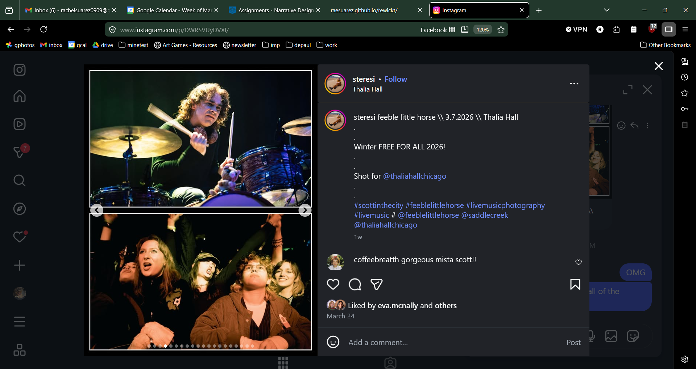
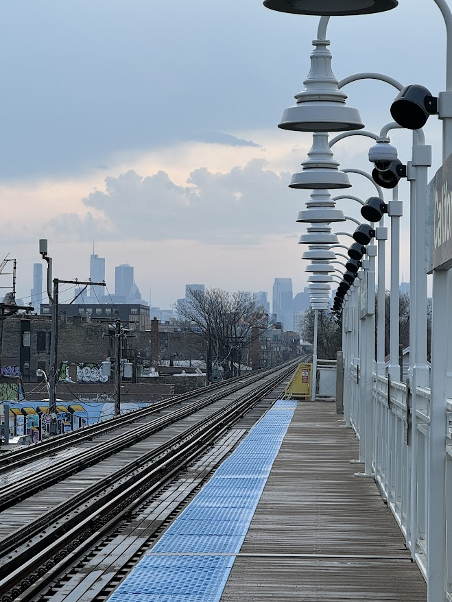
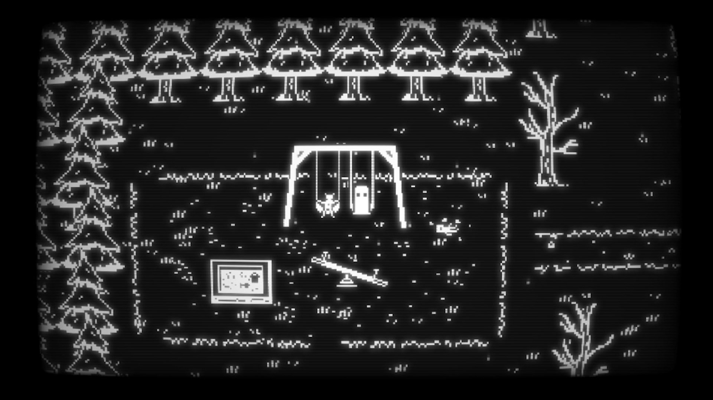

what's new
I SURVIVED FINALS. guys that was so bad. i had two group projects, one of them i was doing the majority of the work with literally no help, the other was just so last minute even though
i was trying to be proactive about it. i genuinely dont rmb much of march it was all game dev stuff and work. sigh. but i had such a good time on spring break. AND i went running for the first time. have gone a
few more times since its just kinda cold and also rainy in chicago rn. but i am not hating running and i like moving my body. i feel like with my job and classes im always sitting. i need to stretch my joints.
recent adventures

hello instagram
- i went to the thalia hall free for all and was featured front row several times w eva (hi eva)! first time
we have hung out since graduating it was baller af.

the view from the L
- SPRING BREAK SAVED ME!!! i was off work and school at the same time. i went to so many new coffee shops and bookstores
in wicker park/logan square, went thrifting, went on an awesome and fun date w riley. i am actually so sad its over and i have to like have a job
and class and stuff.
consumer corner
my faves from this month
again i did not get to consume much media this month bc i was crunching for finals and tbh march disappointed anyways.
i didnt rly like buddy simulator which has been in my library for a while. and harrys new album was alright. animal farm was
a good read, short and classic, very alarmingly relevant almost. the pitt is still the highlight of my week and slomw is fine(i hate dadtok)
played: buddy simulator 1984

listened: kiss all the time, disco occasionally by harry styles
watched: still da pitt s2 & secret lives of mormon wives s4
read: animal farm by george orwell